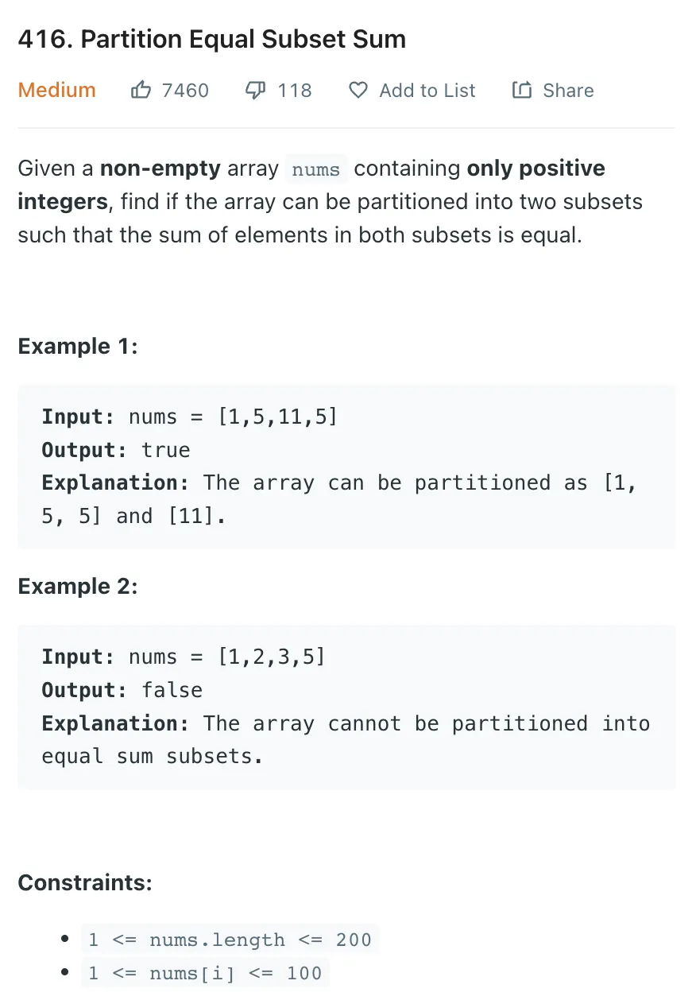

416. Partition Equal Subset Sum
考過的公司：Amazon、Bytedance、Google
Question

✍🏽 My Solution
Runtime: 31 ms, faster than 78.15% of Java online submissions for Partition Equal Subset Sum.
Memory Usage: 43.4 MB, less than 70.07% of Java online submissions for Partition Equal Subset Sum.
class Solution {
public boolean canPartition(int[] nums) {
int n = nums.length;
int sum = 0;
for (int num : nums) {
sum += num;
}
if (sum % 2 == 1) {
return false;
}
sum /= 2;
boolean[][] dp = new boolean[n][sum+1];
dp[0][0] = true;
if (nums[0] < sum) {
dp[0][nums[0]] = true;
}
for (int i = 1; i < n; i++) {
for (int j = 0; j <= sum; j++) {
if (j - nums[i] >= 0) {
dp[i][j] = dp[i-1][j] || dp[i-1][j - nums[i]];
} else {
dp[i][j] = dp[i-1][j];
}
/* 測試打印dp數組
if (dp[i][j]) {
System.out.println("dp["+i+"]["+j+"] = " + dp[i][j]);
}
*/
}
// 由于状态转移方程的特殊性，提前结束，可以认为是剪枝操作
if (dp[i][sum]) {
return true;
}
}
return dp[n-1][sum];
}
}
🧠 Thought Process
- Why did I choose this particular implementation?
- 總和不可以為奇數
- 本題目標數字恰好為總和的一半
- 状态转移方程：
dp[i][j] = dp[i - 1][j] or dp[i - 1][j - nums[i]]
- What is the time/space complexity of my solution? How do I know?
- time: O(NC) N為數組個數，C是數組元素和的一半
- space: O(NC)